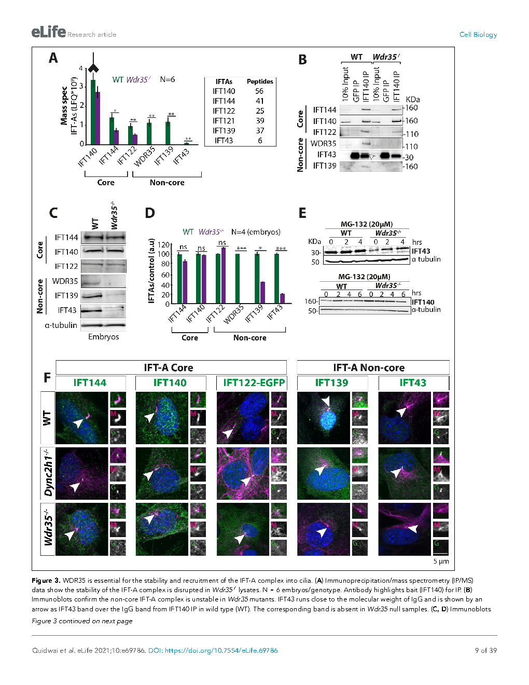
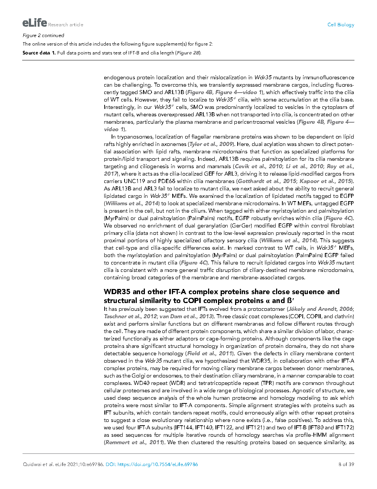
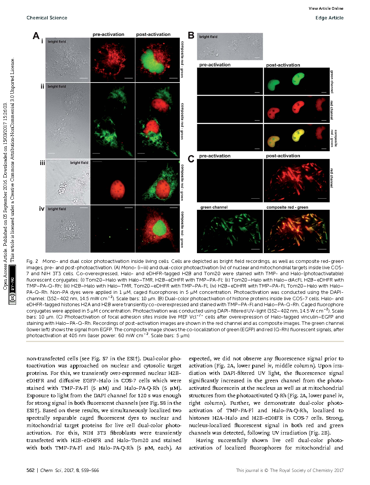
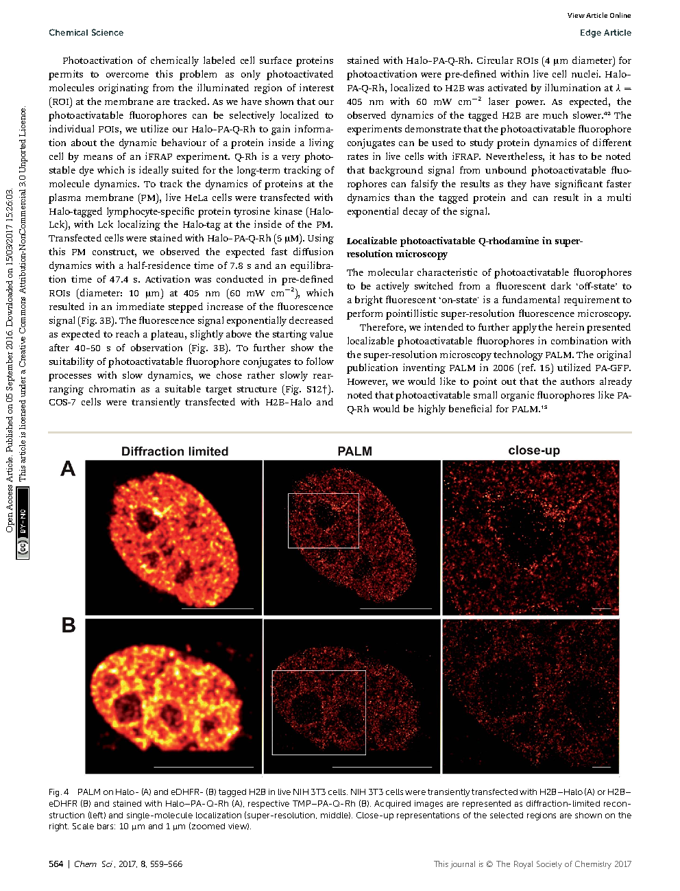

Mechanism
How cargo reaches the cilium, how ciliary structures assemble, and how trafficking defects alter cell behavior.
Dr. Tooba Quidwai is a molecular and cell biologist with more than a decade of international research experience across India, Germany, the United Kingdom, and the United States. Her work spans cilia biology, vesicular trafficking, proteomics, genomics, super-resolution microscopy, and translational disease models, with a particular focus on how defects in ciliary architecture contribute to kidney disease, metabolic disorders, and related pathologies.
How cargo reaches the cilium, how ciliary structures assemble, and how trafficking defects alter cell behavior.
STORM, PALM, CLEM, 3D-TEM, SIM, FRAP, FRET, and image-led mechanistic biology.
Research linked to kidney cystogenesis, obesity, metabolic disorders, and broader ciliopathy mechanisms.
This site is designed as a compact scholarly dossier: a research narrative, publication record, paper figures, and the technical methods behind the work.
A concise scientific statement centered on the core questions, training trajectory, and methods that define the work.
During her PhD at the University of Edinburgh, Dr. Quidwai identified a coatomer-like role for WDR35/IFT121 in ciliary membrane cargo transport, integrating 3D-TEM, correlative microscopy, mouse genetics, and proteomics to explain how membrane-associated material reaches the cilium.
Her postdoctoral work at UMass Chan Medical School expanded this program into kidney cystogenesis, ADAMTS9-mediated TMEM67 biology, central apparatus function, and Chlamydomonas-based ciliary systems, while earlier work at EMBL Heidelberg and the Max Planck Institute built a rigorous foundation in super-resolution microscopy, signaling, and quantitative cell biology.
The site now emphasizes themes and contributions, so the reader sees not just positions and outputs, but the scientific questions underneath them.
Including the WDR35/IFT121 trafficking story that linked ciliary transport to a coatomer-like transport logic.
From STORM and PALM optimization to CLEM and 3D-TEM, imaging is central to the biological argument.
Kidney cyst formation, metabolic disorders, and ciliopathy-relevant mechanisms anchor the translational side of the work.
Projects draw on microscopy, proteomics, structural interpretation, genetics, and grant-linked collaborations across institutions.
Appointments organized as a research arc, from immunology and signaling through imaging methods and cilia-centered disease biology.
UMass Chan Medical School, Worcester, Massachusetts, USA
MRC Institute of Genetics & Molecular Medicine, University of Edinburgh, UK
MRC Institute of Genetics & Cancer, University of Edinburgh, UK
European Molecular Biology Laboratory, Heidelberg, Germany
Max Planck Institute of Molecular Physiology, Dortmund, Germany
National Institute of Immunology, India
A figure-led publication section that highlights not only the citations and venues, but the biological argument and visual evidence behind the papers.

Biochemistry and microscopy evidence from the 2021 eLife study on cargo transport to cilia.

Rendered directly from the local paper PDF to give the site the feeling of a research archive, not just a resume.

Representative figure page from the Chemical Science paper on caged fluorophores and super-resolution microscopy.

Close-up view emphasizing how imaging methods and figure aesthetics can become part of the scholarly identity of the site.
This section now reads more like academic positioning: invited visibility, fellowships, and training of others, not just an events list.
Presented as methodological platforms rather than a flat keyword list, to better reflect how an academic reader scans capability.
Microscopy workflows used as primary tools for biological discovery.
STORM, PALM, STED, SIM, CLEM, 3D-TEM, Airyscan, Hyvolution, deconvolution, FRAP, FRET.
ImageJ, Imaris, Huygens, IMOD, tomography, segmentation, and image processing pipelines.
Experimental range from cloning and culture systems to proteomics and genome editing.
CRISPR, cloning, PCR and RT-PCR, immunoprecipitation, mass spectrometry, western blotting, ELISA, mutagenesis, protein purification.
MEF, human fibroblasts, IMCD3, MDCK, HepG2, RP2, platelets, stem-cell related systems, and Chlamydomonas culture.
Structural and quantitative support for image-heavy and proteomics-heavy biology.
AlphaFold, Swiss Model, Phyre2, HHblits, PyMOL, Coot, MATLAB, and basic Python.
Adobe Photoshop, Illustrator, InDesign, Office tools, and science communication coursework.
This closes the page with training context and where the work is heading now.